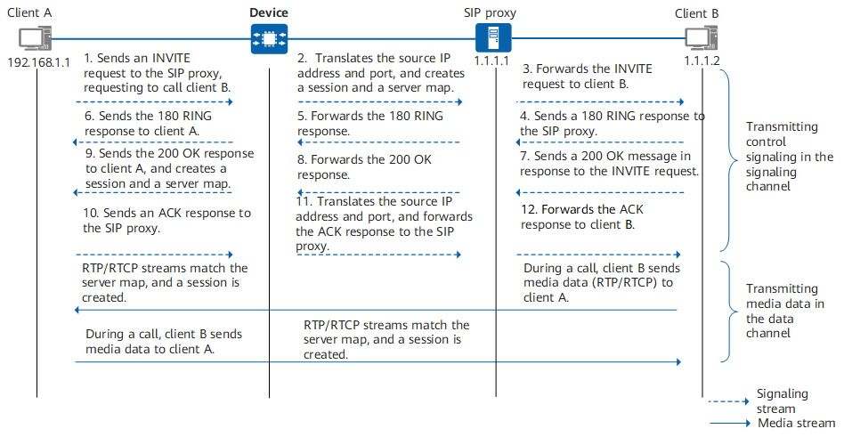

Understanding SIP ASPF/ALG
The Session Initiation Protocol (SIP) is an IETF standard protocol used to create, modify, and release sessions of one or more participants. These sessions can be interactive user sessions that involve multimedia elements such as voice calls, multimedia conferences, and virtual reality.
SIP is a multi-channel protocol. In addition to establishing signaling channels for transmitting signaling, the calling and called parties also establish data channels for transmitting media data such as voice and video data. Therefore, SIP traffic is classified into signaling streams and media streams. Signaling streams are transmitted through UDP or TCP, including requests and responses from both parties. Media streams are transmitted through RTP and RTCP, including media (such as voice and video) data packets.
SIP can use UDP port 5060 or TCP port 5060 (non-encryption)/5061 (TLS encryption) to transmit signaling streams. To ensure that signaling streams can pass through the security device (Device used as an example), you need to configure a security policy on the Device to allow SIP signaling traffic to pass through. Media streams, however, are transmitted through a port negotiated dynamically and the port number cannot be learned in advance; therefore, the administrator cannot configure refined security policies to control the forwarding of media streams.
In the NAT scenario, common NAT can only translate the IP address and port carried in the network layer information of the packets and cannot translate the IP address and port carried in the application layer information. As a result, subsequent signaling and media streams cannot be exchanged.
In this case, the SIP ASPF/ALG function needs to be enabled on the Device for detecting and translating the IP address and port carried in the application layer information and recording the information in the server map. The media data packets match the server map when passing through the Device and are permitted, which are no longer controlled by security policies.
As shown in Figure 1, client A is located on the intranet, and client B and the SIP proxy are located on the Internet in the source NAT scenario. This section describes the key interaction process among client A, client B, and the SIP proxy and the processing of packets after the ASPF/ALG function is enabled on the Device.

Client A sends an INVITE request to port 5060 of the SIP proxy to call client B. The Via field in the header of the INVITE request contains the address information of the sender (for example, 192.168.1.1:2000). The message body contains the media control information (IP address and port indicated by the Connection Information and Media Description fields) described by the SDP, instructing the peer end to send media streams to the specified IP address and port number (for example, 192.168.1.1:3000).
After receiving the INVITE request, the Device translates the IP address and port number, forwards the INVITE request to the SIP proxy, creates a signaling channel session, and creates a server map based on the IP address and port number in the header and body of the INVITE message. The server map is used to permit the packets exchanged subsequently.

The Device creates two server maps based on the media connection address in the message body. The two server maps are used to permit RTP streams and RTCP streams respectively. The port number used by RTCP streams is equal to the port number for RTP streams plus 1.
<HUAWEI> display firewall server-map aspf Type: ASPF, ANY -> 1.1.1.10:2222[192.168.1.1:2000], Zone: --- Protocol: udp(Appro: sip), Left-Time: 00:02:00 VPN: public -> public Type: ASPF, ANY -> 1.1.1.10:3333[192.168.1.1:3000], Zone: --- Protocol: udp(Appro: sip-rtp), Left-Time: 00:00:50 VPN: public -> public Type: ASPF, ANY -> 1.1.1.10:3334[192.168.1.1:3001], Zone: --- Protocol: udp(Appro: sip-rtcp), Left-Time: 00:00:50 VPN: public -> public
The Device creates a server map (the first server map) for signaling streams to permit subsequent signaling data sent from client B to client A. It also creates two server maps (the second and third server maps) for data streams to permit subsequent media data sent from client B to client A.
The SIP proxy forwards the INVITE request to client B, requesting client B to join the call. The INVITE message also carries the session description of client A.
Client B rings and sends a 180 RING response to the SIP proxy.
The SIP proxy forwards the 180 RING response.
After receiving the 180 RING response, the Device matches the signaling channel session, translates the destination address of the message to the actual IP address and port of client A, and forwards the message to client A. Then, client A hears the ringback tone.
Client B answers the call and then sends a 200 OK response to the SIP proxy, indicating that the INVITE request sent by the SIP proxy has been accepted and processed. The Via field in the header of the message contains the address information of the sender (for example, 1.1.1.2:3000). The message body contains the media control information (IP address and port indicated by the Connection Information and Media Description fields) described by the SDP, instructing the peer end to send media streams to the specified IP address and port number (for example, 1.1.1.2:4000).
The SIP proxy forwards the 200 OK response, indicating that the INVITE request has been accepted and processed. The 200 OK response also carries the session description of client B.
After receiving the 200 OK response, the Device translates the destination address of the message to the actual IP address and port of client A and forwards the message to client A. It also creates a server map based on the IP address and port number in the header and body of the 200 OK response. The server map is used to permit the packets exchanged subsequently.
The Device creates two server maps based on the media connection address in the message body. The two server maps are used to permit RTP streams and RTCP streams respectively. The port number used by RTCP streams is equal to the port number for RTP streams plus 1.
<HUAWEI> display firewall server-map aspf Type: ASPF, ANY -> 1.1.1.2:3000, Zone: --- Protocol: udp(Appro: sip), Left-Time: 00:02:00 VPN: public -> public Type: ASPF, ANY -> 1.1.1.2:4000, Zone: --- Protocol: udp(Appro: sip-rtp), Left-Time: 00:00:50 VPN: public -> public Type: ASPF, ANY -> 1.1.1.2:4001, Zone: --- Protocol: udp(Appro: sip-rtcp), Left-Time: 00:00:50 VPN: public -> public
Only the server maps created on the Device in this phase are displayed.
The Device creates a server map (the first server map) for signaling streams to permit subsequent signaling data sent from client A to client B. It also creates two server maps (the second and third server maps) for data streams to permit subsequent media data sent from client A to client B.
Client A sends an ACK message to the SIP proxy, indicating that it has received the SIP proxy's final response to the INVITE request.
The Device receives the ACK message, translates the IP address and port number, and forwards the message to the SIP proxy.
The SIP proxy forwards the ACK message to client B, indicating that it has received client B's final response to the INVITE request. In this case, both the calling party and the called party know each other's media connection address, and the call can be set up.
During a call between client A and client B, media streams match the server map. The Device creates two sessions (RTP session and RTCP session) from client A to client B and from client B to client A respectively.